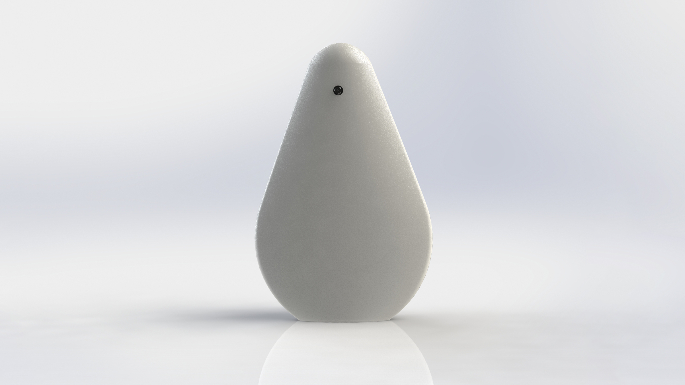
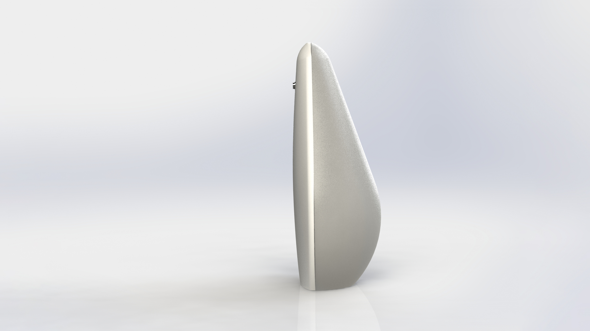
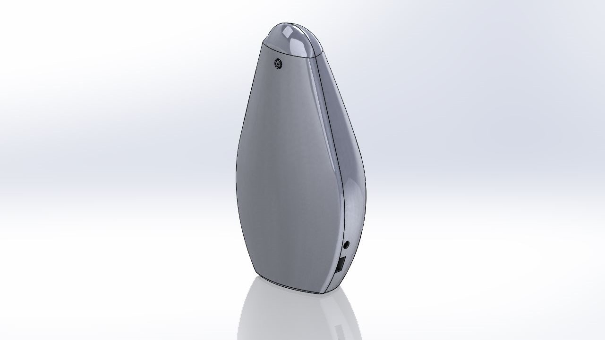
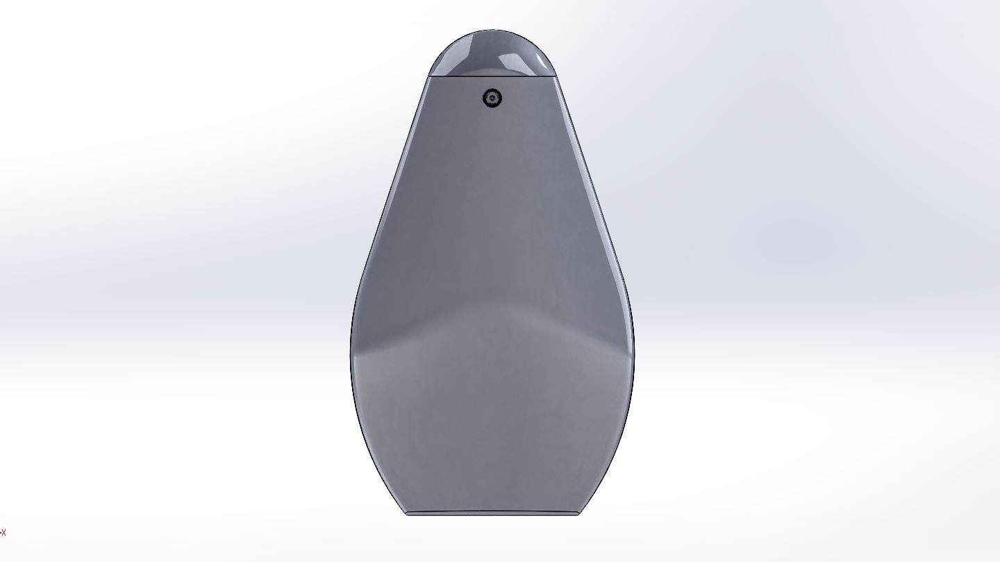
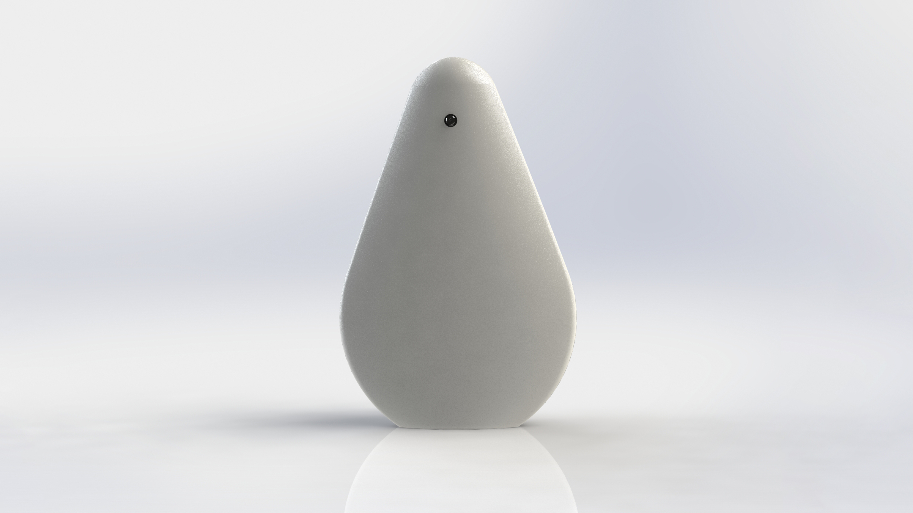
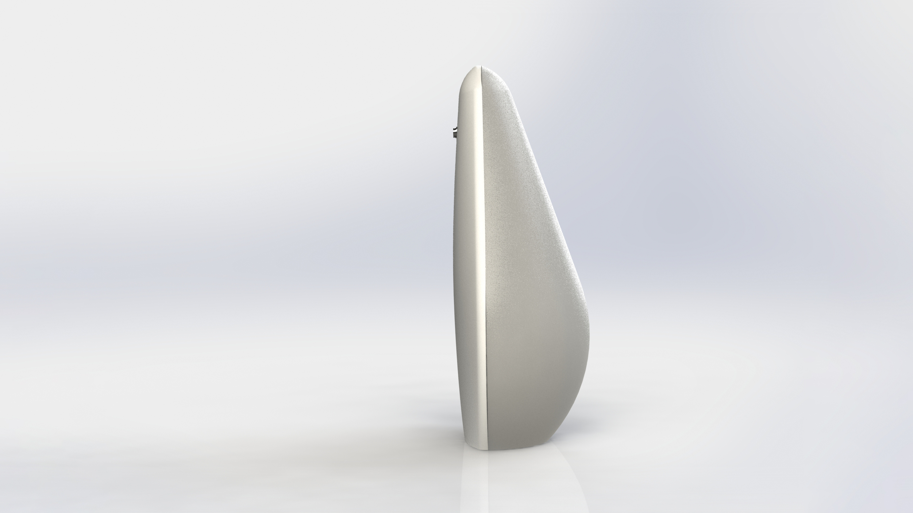
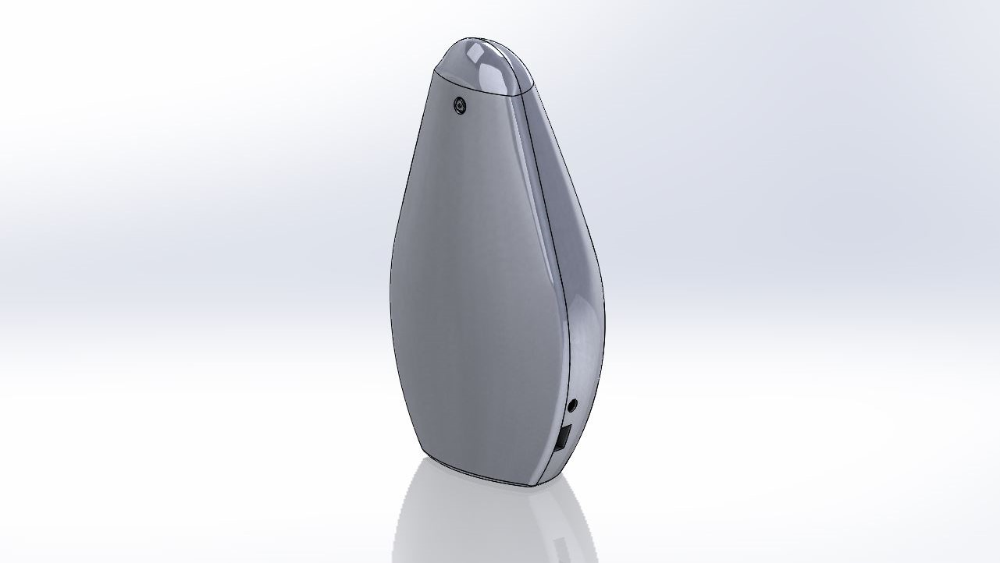
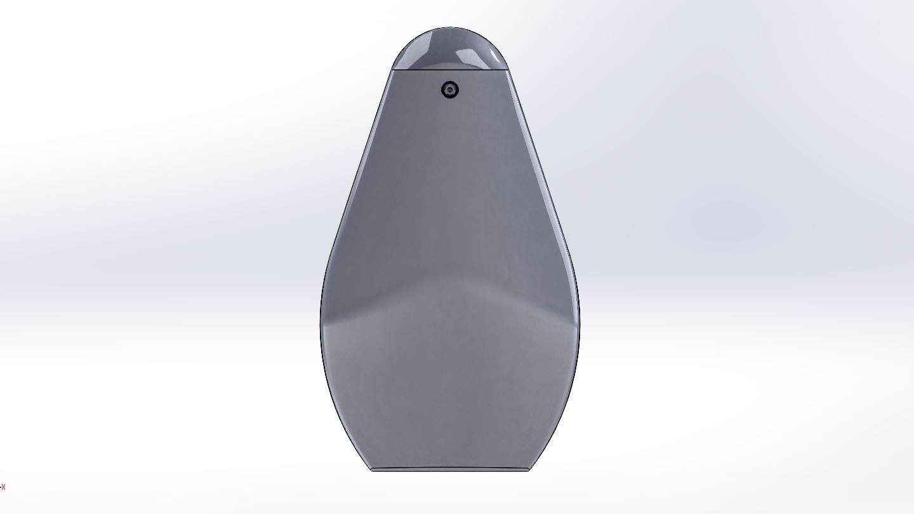

Problem
Elderly people are prone to crimes such as theft, burglary and even murder. Other than that they have a fear of emergency situations such as accidental falls. But there is a limited facility available for them to intimate someone in such situations. The surveillance system present nowadays does not have a proactive alert system and also affects the user experience with their apparent designs. The phase II specific problems are the absence of an HMI in phase I, the likeability of design for every user (Some may be phobic to cats or animals) and an additional constraint of change in the processor from Raspberry Pi 3B+ to Nvidia Jetson Nano due to its high processing power. .
User
The primary users are household residents who feel bad when they are apparently in front of a camera but looking for a surveillance system.
My Role
My role in phase II of this project was crucial since I was involved in the final product design. The solution concept is similar to phase I which has in-built AI running in a processor. The processor was bit large than the older one and making the device compact was mandatory.
Design Process
To cater to the need, the design was made covering the perimeter of the processor in the bottom and holding the camera in the top with a narrow face. But this structure when converted into a device should be good looking and create a good user experience. The device was provided with a snap-fit fastening feature considering DFA and aesthetics. The GD&T for the snap-fit was studied and designed. The device was 3D printed and delivered to the sponsor for further process.